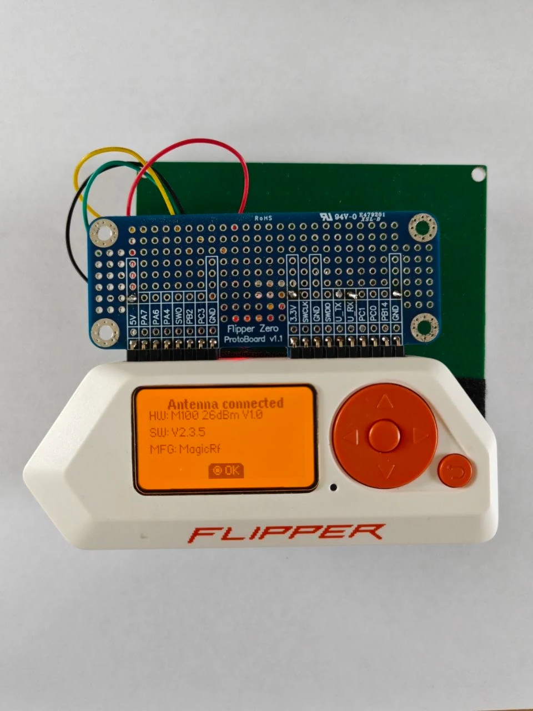
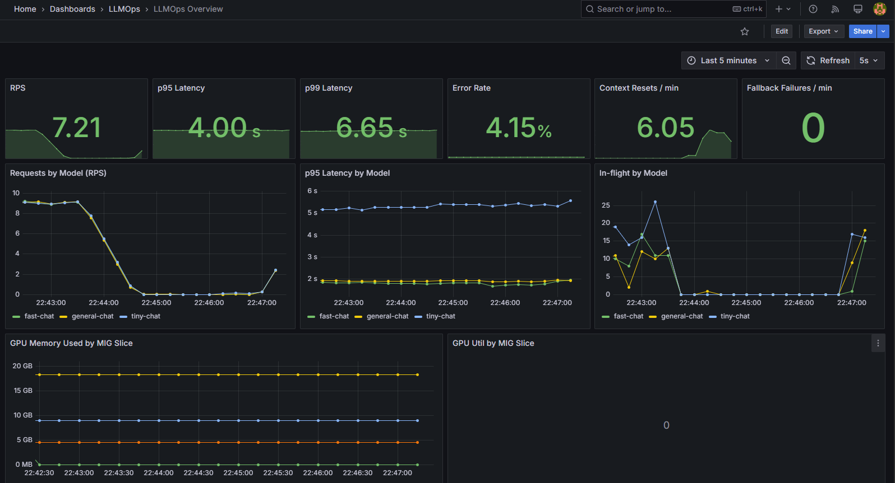
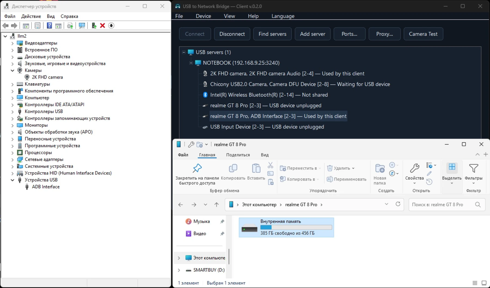
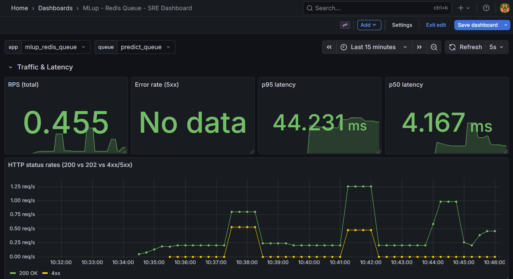
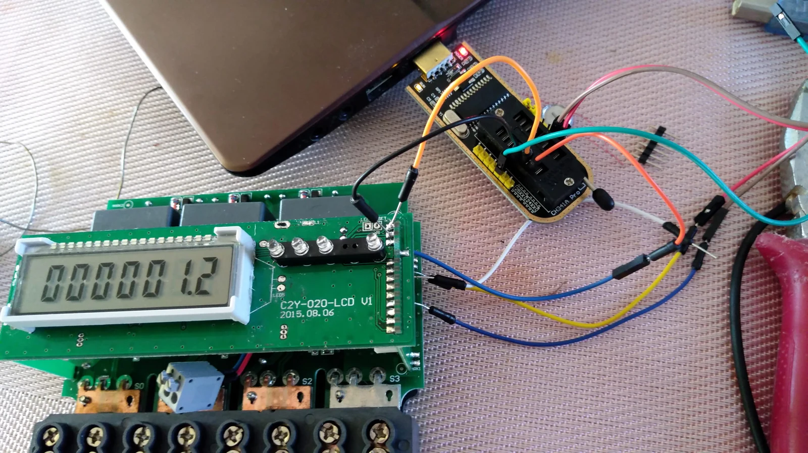

FLIPPER ZERO / UHF RFIDYRM100X PRO
UHF RFID на Flipper Zero: чтение и запись меток, полный дамп памяти и диагностика с модулями YRM100X.
Код и документация Приложение
// HARDWARE → SYSTEMS → AI
Исследую, как устроены системы.
Создаю инструменты,
которые делают их полезнее.
От микросхемы памяти до распределённого ML.
За каждым проектом
— конкретная задача,
исходный код и документация.

FLIPPER ZERO / UHF RFIDUHF RFID на Flipper Zero: чтение и запись меток, полный дамп памяти и диагностика с модулями YRM100X.

ONE GPU. MULTIPLE MODELS.Три LLM и изолированный стресс-тест на одной NVIDIA A100. Разделение GPU, шлюз запросов и наблюдаемость в одном стенде.

USB → NETWORKWindows-приложение для подключения USB-устройств через сеть. Графический интерфейс для работы с USB/IP.

DISTRIBUTED ML / REDISРаспределённое выполнение ML-задач: очередь в Redis, воркеры на нескольких узлах и мониторинг выполнения.

REVERSE ENGINEERING / 2020Исследование устройства электросчётчика: микросхема памяти, структура данных и инструменты для работы с дампами.
Попробуйте другое название или технологию.
Форки, заготовки и исходники этого сайта.
Библиотека Telegram Bot API для AutoIt с WinHTTP.
Форк каталога приложений Flipper Zero.
Заготовка репозитория. Код и описание пока не опубликованы.
Исходный код страницы, которую вы сейчас смотрите.
Все 9 публичных репозиториев учтены · каталог обновлён 11 ноября 2026
Интереснее всего — там,
где сходятся несколько дисциплин.
Мои проекты связывают электронику, системное программирование и AI-инфраструктуру. От протокола RFID и USB-устройства — до очереди задач и моделей на GPU.
Разобраться в основеПротоколы, память, архитектура и ограничения.
Довести до инструментаПриложение, стенд или воспроизводимый эксперимент.
Оставить открытымИсходники и документация — в публичных репозиториях.
Обсудим системы, инструменты и новые идеи.